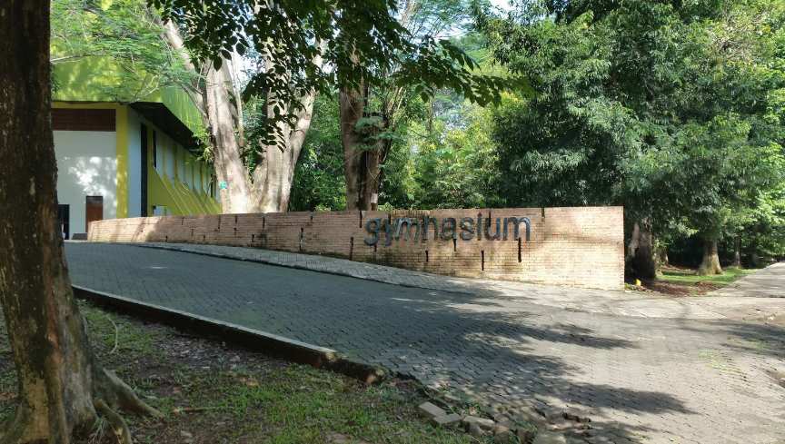
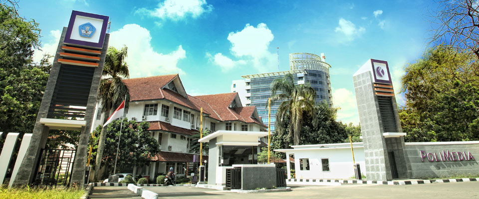
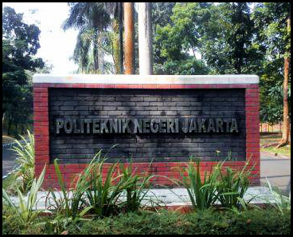

Venue Lomba Porseni 2018
Johan, 20 April 2018
Berikut ini adalah venue lomba yang akan dilaksanakan Porseni dalam 2 bulan kedepan.
1. Gor Ciracas

Alamat : Jalan Raya Bogor KM. 25-26, Ciracas, RT.8/RW.8, Susukan, RT.8/RW.8, Susukan, Ciracas, Kota Jakarta Timur, Daerah Khusus Ibukota Jakarta 13740
Telp : (021) 87721918
Fasilitas : stadion sepak bola , stadion kolam renang, kolam renang, lapangan futsal, voli, basket, gym
Kapasitas : 5000 orang
Transportasi :
Bandara Soekarno hatta - Terminal 2 soekarn-Hatta - Bis DAMRI KAMPUNG RAMBUTAN - angkot d112 atau bis depok timur kampung rambutan - turun di GOR Ciracas
Universitas indonesia - Keluar ke jalan margonda raya melewati stasiun pondok cina - angkot d112 - turun di gor ciracas
Universitas indonesia - keluar ke jalan margonda raya melewati stasiun pondok cina - angkot d11 menuju pal - Bis bogor- kp rambutan - turun di gor ciracas
2. Stadion UI/Gymnasium UI
Alamat : Jl. Prof. DR. Ir Somantri Brodjonegoro, Kukusan, Beji, Kota Depok, Jawa Barat 16425
Telp : -
Fasilitas : stadion sepak bola , basket volly, futsal, tenis meja, bulu tangkis
Kapasitas : 5000 orang
Transportasi :
dari Bandara Soekarno hatta - naik kereta soekarno hatta menuju stasiun sudirman baru - Naik kereta jurusan bogor/jatinegara - turun di Stasiun Universitas indonesia / stasiun pondok cina - Naik bis Kuning langsung menuju lokasi
Stasiun pondok cina / Stasiun Universitas indonesia - Naik bis Kuning langsung menuju lokasi
3. Politeknik Media Kreatif
Alamat : Jalan Srengseng Sawah No.17, RT.8/RW.3, Srengseng Sawah, Jagakarsa, RT.3/RW.15, Srengseng Sawah, Jagakarsa, Kota Jakarta Selatan, Daerah Khusus Ibukota Jakarta 12630
Telp : (021) 7270036
Fasilitas : ruang gendung olahraga (bulu tangkis, futsal, bola voli, basket)
Kapasitas : -
Transportasi :
Dari Universitas indonesia - naik kereta arah jakarta - turun di stasiun lenteng agung - angkot 83 - turun di depan polimedia
Dari stasiun lenteng agung -angkot 83 - turun di depan polimedia
Dari Teriminal depok - naik 128 - turun di depan polimedia
4. Politeknik Negeri Jakarta
Alamat : Jl. Prof. Dr. G.A Siwabessy Kampus Baru UI, Kukusan, Beji, Kukusan, Beji, Kota Depok, Jawa Barat 16424
Telp : (021) 7270036
Fasilitas : Gedung serba guna, Kantin, Lapangan Utama, Lapangan Basket, Lapangan Volly , Kolam Renang
Kapasitas : -
Transportasi :
dari Bandara Soekarno hatta - naik kereta soekarno hatta menuju stasiun sudirman baru - Naik kereta jurusan bogor/jatinegara - turun di Stasiun Universitas indonesia / stasiun pondok cina - Naik bis Kuning langsung menuju lokasi/ menaiki bis politeknik negeri jakarta
Stasiun pondok cina / Stasiun Universitas indonesia - Naik bis Kuning langsung menuju lokasi